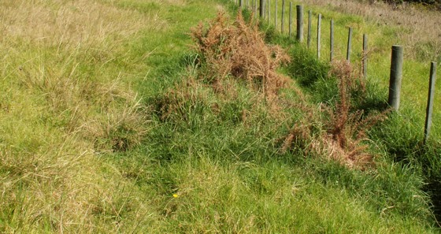

Organic
herbicide for gorse
Caution: You are making strong and potentially dangerous solutions. Please follow these instructions carefully and be safe with this sprays use. Use rubber gloves when handling the urea solution and wear protective eyewear at all times when spraying. Wash skin that comes in contact with the solution. (Note: I have not personally suffered any harm from getting the stuff on my skin, but I do need you to understand the dangers- I will not be responsible for the way you use the ingredients or spray solution. Do NOT get this stuff in your eyes.) Urea is a nitrogen fertiliser and an organic substance. Urine contains urea. It is also produced by petrochemical companies in bulk for fertiliser by reacting natural gas with air under pressure (air is mostly made up of nitrogen and urea is 46% nitrogen). Urea dissolves really well in water, and if you heat the water more can be dissolved. First prepare the urea solution by dissolving 4kg in water to make 10 litres. You can mix up larger batches and store it in a drum with a closed lid, but watch out for ammonia gas when you open the drum. Ammonia gas is harmful and you must not inhale it. be very careful opening the drum.
I mix 60-80 ml dishwashing detergent (depending on the strength) as a surfactant, and some spray dye in to ensure even and thorough coverage. Phosphate I mix 200ml Phosphoric acid with the urea solution just before I go spraying, and use all the spray up. The phosphoric acid may react with the urea given time, I'm not sure of the chemistry here. I add phosphoric acid because my soils are really phosphate deficient and urea alone won't green up my grass. With a bit of phosphate, the grass greens up wonderfully. Gorse usually grows in phosphate deficient soils, and if you increase the soil fertility the gorse can't compete as well with the pasture and becomes less abundant. I wash out my sprayer after use. Gorse must be sprayed before it seeds. If the plants are getting bigger mow them or cut them down and spray the regrowth. You will use a lot less spray. The key to success appears to be the time of year you spray. The peak of summer is ideal, and choose sunny warm weather. The plant will be transpiring and the stomata open. In these conditions they die very quickly, usually within a week. I like to spray in the middle of the day until the early evening, and after the morning dew has evaporated. It acts as a contact herbicide and quickly kills the photosynthesising parts of the plant it contacts. However the spray needs to "soak in" at least 24 hours before it rains- the longer the better. You also need to cover the gorse plant well with spray to kill it. Walk around the plants when spraying so you get a good and even coverage, and spray the plant until its well wetted. If you miss some this part of the plant will stay alive, but you can come back later to finish the job. The gorse will begin to die and go brown within a few days. It rots very rapidly due to the nitrogen increasing the rate of decay. Check the plants in a couple of weeks and respray any green remaining. Because this spray only kills what it comes into contact with it doesn't kill the grasses surrounding your gorse. The grass foliage will be a bit burned but pasture comes away and grows fantastically well after being sprayed, while the gorse dies.  Please email me with your comments and experiences so I can incorporate them into this page. During the summer of 2008/2009 I have refined this method to this stage, but I'm sure it can be further improved. © Dean Satchell 2009-2013 |